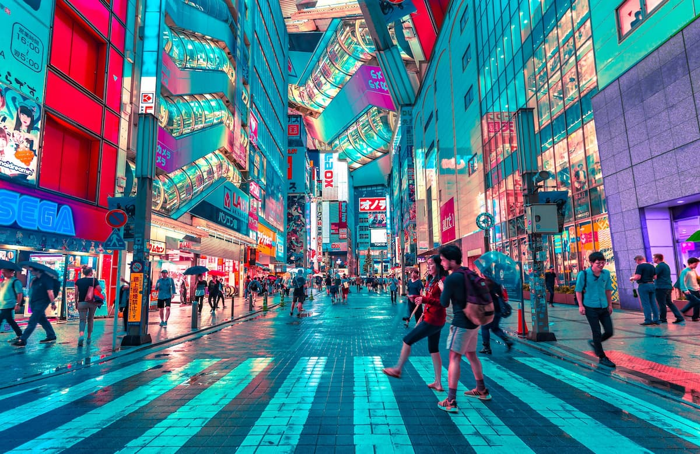

<!doctype html>
<html lang="he" dir="rtl"></html>
  <head>
    <title>טוקיו - האתרים היפים בעולם</title>
    <link rel="stylesheet" href="style.css" />
  </head>
  <body>
    <table border="1" width="80%" align="center" cellpadding="10">
      <tr>
        <td colspan="2" align="center"><h1>טוקיו, יפן</h1></td>
      </tr>
      <tr>
        <td width="40%" align="center">
          
        </td>
        <td width="60%" valign="top">
          <h3>על העיר</h3>
          <p>
            טוקיו היא אחת הערים המרתקות בעולם, המשלבת גורדי שחקים עתידניים עם
            מקדשים מסורתיים ושלווים. זוהי עיר של ניגודים חדים, שבה ניתן למצוא
            רובוטים מתקדמים לצד טקסי תה עתיקים. היא ידועה בטכנולוגיה המתקדמת
            שלה, בתרבות האנימה העשירה ובקצב החיים המהיר שלה.
          </p>
          <p>
            רובע שיבויה מציג את הפנים המודרניות של יפן עם מעבר החצייה העמוס
            בעולם ומסכי ענק המאירים את הלילה. לעומתו, רובע אסקוסה מאפשר למבקרים
            לחזור אחורה בזמן דרך מקדש סנסו-ג'י המרשים ודוכני הרחוב המוכרים
            מאכלים מסורתיים בטעמים של פעם.
          </p>
          <p>
            הקולינריה היפנית בטוקיו היא חוויה בפני עצמה, החל מדוכני הראמן
            הצפופים מתחת למסילות הרכבת ועד לשוק הדגים המפורסם המציע את הסושי
            הטרי ביותר שניתן למצוא. הדיוק, הניקיון והאדיבות של המקומיים תורמים
            לאווירה המיוחדת שהופכת את טוקיו ליעד חובה.
          </p>
        </td>
      </tr>
      <tr>
        <td colspan="2" align="center">
          <p><a href="index.html">חזרה לדף הבית</a></p>
        </td>
      </tr>
    </table>
  </body>
</html>
